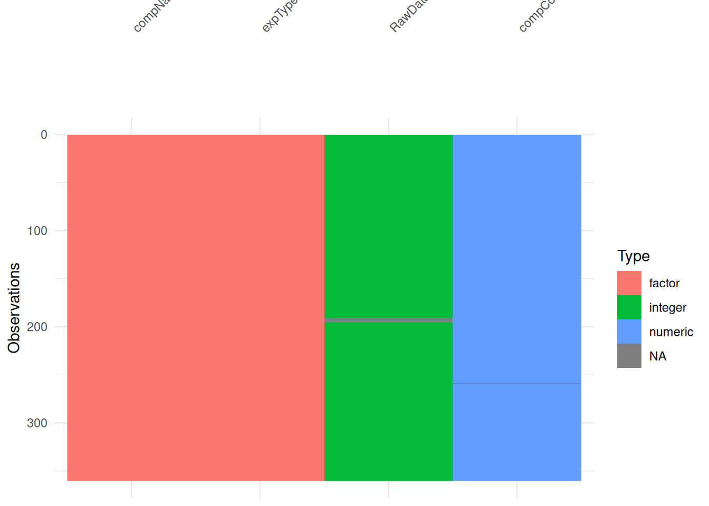

Reproduceerbaarheid
Reproductie data analyse
In dit onderdeel werk ik een opdracht uit met als doel de analyse reproduceerbaar uit te werken in een Rmd file. De gebruikte data is aanwezig in ./data/
De data is afkomstig van het HU lectoraat Innovative Testing in Life Sciences & Chemistry. De data is verkregen door de C. elegans bloot te stellen aan verschillende doses van verschillende chemicaliën. De volgende variabelen in de dataset zijn van belang voor de analyse:
- RawData: het aantal nakomelingen dat is geteld.
- compName: de naam van het chemicalie waaraan de wormen zijn blootgesteld.
- compConcentration: de gebruikte concentratie van het chemicalie.
- expType: een variabele die aangeeft of de meting een experimentele conditie is, of een controle conditie (negatieve controle of vehicle controle).
Voer de onderstaande stappen uit in je analyse:
Lees de data in in R met het readxl package. Inspecteer de data. Is de data goed ingelezen? Kloppen de data types voor rawData, compName en compConcentration?
## # A tibble: 6 × 34
## plateRow plateColumn vialNr dropCode expType expReplicate expName
## <lgl> <lgl> <dbl> <chr> <chr> <dbl> <chr>
## 1 NA NA 1 a experiment 3 CE.LIQ.FLOW.062
## 2 NA NA 1 b experiment 3 CE.LIQ.FLOW.062
## 3 NA NA 1 c experiment 3 CE.LIQ.FLOW.062
## 4 NA NA 1 d experiment 3 CE.LIQ.FLOW.062
## 5 NA NA 1 e experiment 3 CE.LIQ.FLOW.062
## 6 NA NA 2 a experiment 3 CE.LIQ.FLOW.062
## # ℹ 27 more variables: expDate <dttm>, expResearcher <chr>, expTime <dbl>,
## # expUnit <chr>, expVolumeCounted <dbl>, RawData <dbl>, compCASRN <chr>,
## # compName <chr>, compConcentration <chr>, compUnit <chr>,
## # compDelivery <chr>, compVehicle <chr>, elegansStrain <chr>,
## # elegansInput <dbl>, bacterialStrain <chr>, bacterialTreatment <chr>,
## # bacterialOD600 <dbl>, bacterialConcX <dbl>, bacterialVolume <dbl>,
## # bacterialVolUnit <chr>, incubationVial <chr>, incubationVolume <dbl>, …## tibble [360 × 4] (S3: tbl_df/tbl/data.frame)
## $ RawData : num [1:360] 44 37 45 47 41 35 41 36 40 38 ...
## $ compName : chr [1:360] "2,6-diisopropylnaphthalene" "2,6-diisopropylnaphthalene" "2,6-diisopropylnaphthalene" "2,6-diisopropylnaphthalene" ...
## $ compConcentration: chr [1:360] "4.99" "4.99" "4.99" "4.99" ...
## $ expType : chr [1:360] "experiment" "experiment" "experiment" "experiment" ...
In de str is het volgende te zien:
- RawData is num en zou het aantal nakomelingen moeten bevatten. Dit hoort integrals te zijn (het gaat om frequenties).
- compName is chr en zou de naam van de chemicaliën moeten bevatten. Hier factoren van maken is handig voor plots.
- compConcentration is chr en zou de concentratie van de chemicaliën meoten bevatten. Dit hoort numeric te zijn.
- expType is chr en zou het experiment type moeten bevatten neg of vehicle. Ook hier is het handig om hier factoren van te maken voor plots.
# Editting data types
edit_data<- data %>% select(RawData, compName, compConcentration, expType)
edit_data$RawData <- as.integer(edit_data$RawData)
edit_data$compName <- as.factor(edit_data$compName)
edit_data$expType <- as.factor(edit_data$expType)
edit_data$compConcentration <- as.numeric(edit_data$compConcentration)## Warning: NAs introduced by coercion## tibble [360 × 4] (S3: tbl_df/tbl/data.frame)
## $ RawData : int [1:360] 44 37 45 47 41 35 41 36 40 38 ...
## $ compName : Factor w/ 5 levels "2,6-diisopropylnaphthalene",..: 1 1 1 1 1 1 1 1 1 1 ...
## $ compConcentration: num [1:360] 4.99 4.99 4.99 4.99 4.99 4.99 4.99 4.99 4.99 4.99 ...
## $ expType : Factor w/ 4 levels "controlNegative",..: 4 4 4 4 4 4 4 4 4 4 ...## [1] "controlNegative" "controlPositive" "controlVehicleA" "experiment"## [1] "2,6-diisopropylnaphthalene" "decane"
## [3] "Ethanol" "naphthalene"
## [5] "S-medium"
# NA values op een rij
na_search <- edit_data %>% filter(is.na(RawData) | is.na(compConcentration))
na_search## # A tibble: 6 × 4
## RawData compName compConcentration expType
## <int> <fct> <dbl> <fct>
## 1 NA naphthalene 19.5 experiment
## 2 NA naphthalene 19.5 experiment
## 3 NA naphthalene 19.5 experiment
## 4 NA naphthalene 19.5 experiment
## 5 NA naphthalene 19.5 experiment
## 6 70 naphthalene NA experiment## # A tibble: 16 × 1
## compConcentration
## <chr>
## 1 4.99
## 2 0.499
## 3 4.99E-2
## 4 4.9899999999999996E-3
## 5 4.9899999999999999E-4
## 6 4.99E-5
## 7 19.5
## 8 1.95
## 9 0.19500000000000001
## 10 1.95E-2
## 11 1.9499999999999999E-3
## 12 1.95E-4
## 13 0,000195
## 14 1.5
## 15 0
## 16 0.5NA introduced in de Concentratie colom na het omzetten naar numeric. Bij het bekijken van de concentraties is te zien dat er een komma als decimaal is gebruikt in plaats van de punt. Het blijkt te gaan om een enkel datapunt en de komma is vervangen emt een punt met behulp van de str_replace() functie. Vervolgens is de kolom aangepaast naar een numeric kolom.
# CompConcentratie kolom waarde goed zetten
edit_data$compConcentration <- sel_data$compConcentration
# Controle voor andere komma
sel_data %>% filter(str_detect(compConcentration, ","))## # A tibble: 1 × 4
## RawData compName compConcentration expType
## <dbl> <chr> <chr> <chr>
## 1 70 naphthalene 0,000195 experiment# Vervanging van de komma door een punt
sel_data_fixed <- sel_data %>% mutate(compConcentration = str_replace(compConcentration, ",", "."))
sel_data_fixed %>% filter(str_detect(compConcentration, ","))## # A tibble: 0 × 4
## # ℹ 4 variables: RawData <dbl>, compName <chr>, compConcentration <chr>,
## # expType <chr>## # A tibble: 16 × 1
## compConcentration
## <chr>
## 1 4.99
## 2 0.499
## 3 4.99E-2
## 4 4.9899999999999996E-3
## 5 4.9899999999999999E-4
## 6 4.99E-5
## 7 19.5
## 8 1.95
## 9 0.19500000000000001
## 10 1.95E-2
## 11 1.9499999999999999E-3
## 12 1.95E-4
## 13 0.000195
## 14 1.5
## 15 0
## 16 0.5# Tibble aanpassen
fixed_data <- edit_data
fixed_data$compConcentration <- sel_data_fixed$compConcentration %>% as.numeric(fixed_data$compConcentration)
str(fixed_data)## tibble [360 × 4] (S3: tbl_df/tbl/data.frame)
## $ RawData : int [1:360] 44 37 45 47 41 35 41 36 40 38 ...
## $ compName : Factor w/ 5 levels "2,6-diisopropylnaphthalene",..: 1 1 1 1 1 1 1 1 1 1 ...
## $ compConcentration: num [1:360] 4.99 4.99 4.99 4.99 4.99 4.99 4.99 4.99 4.99 4.99 ...
## $ expType : Factor w/ 4 levels "controlNegative",..: 4 4 4 4 4 4 4 4 4 4 ...## # A tibble: 15 × 1
## compConcentration
## <dbl>
## 1 4.99
## 2 0.499
## 3 0.0499
## 4 0.00499
## 5 0.000499
## 6 0.0000499
## 7 19.5
## 8 1.95
## 9 0.195
## 10 0.0195
## 11 0.00195
## 12 0.000195
## 13 1.5
## 14 0
## 15 0.5Zie figuur 9 voor de visualisatie van data typen en missing values. Hier is te zien dat in de RawData colom een missing value zit.
Figure 9: Visualisatie data typen met weergave missing values
De data typen zijn aangepast, vervolgens kan de data geplot worden (zie figuur 10). Hierbij is de Concentratie weergeven op de x-as en de hoeveelheid nakomelingen op de y-as.
# Scatterplot met jitter
fixed_data %>% filter(!is.na(RawData)) %>% ggplot(aes(x = compConcentration, y = RawData, color = compName, shape = expType)) +
geom_jitter(width = 0.1, height = 0, size = 3, alpha = 0.8) + # jitter in x richting
scale_x_log10() + # log10 transformatie van x-as
labs(x = "Concentratie (log10)",
y = "Aantal nakomelingen",
color = "Chemische stof",
shape = "Type experiment",
title = "Scatterplot nakomelingen C. elegans bij blootstelling chemicalien") +
theme_minimal() +
theme(axis.text.x = element_text(angle = 45, hjust = 1))## Warning in scale_x_log10(): log-10 transformation introduced infinite values.
Figure 10: Scatterplot van het aantal nakomelingen C. elegans per concentratie en chemische stof.
# Data normalisatie
# Gemiddelde negatieve controle
gem_neg <- fixed_data %>% filter(expType == "controlNegative") %>% summarise(mean_neg = mean(RawData)) %>% pull(mean_neg)
gem_neg## [1] 85.9# Delen door dit gemiddelde
norm_data <- fixed_data %>% mutate(RawData_norm = RawData/gem_neg)
# Controle Neg conrtole gelijk aan 1
norm_data %>% filter(expType == "controlNegative") %>% summarise(mean = mean(RawData_norm))## # A tibble: 1 × 1
## mean
## <dbl>
## 1 1# Scatterplot met genormaliseerde waarden
norm_data %>% filter(!is.na(RawData_norm)) %>%
ggplot(aes(x = compConcentration, y = RawData_norm, color = compName, shape = expType)) +
geom_jitter(width = 0.1, height = 0, size = 3, alpha = 0.8) + # jitter in x richting
scale_x_log10() + # log10 transformatie van x-as
labs(x = "Concentratie (log10)",
y = "Nakomelingen",
color = "Chemische stof",
shape = "Type experiment",
title = "Scatterplot genormaliseerde nakomelingen C. elegans bij blootstelling chemicalien",
subtitle = "Aantal nakomelingen als fractie van negatieve controle.") +
theme_minimal() +
theme(axis.text.x = element_text(angle = 45, hjust = 1))## Warning in scale_x_log10(): log-10 transformation introduced infinite values.Figure 11: Scatterplot van genormaliseerde nakomelingen C. elegans per concentratie en chemische stof.
# Summary maken
sum_data <- norm_data %>% filter(!is.na(RawData_norm)) %>%
group_by(compName, compConcentration, expType) %>%
summarise(
mean_RawData_norm = mean(RawData_norm),
sd_RawData_norm = sd(RawData_norm),
.groups = "drop")
# Summary plot
sum_data %>% ggplot(
aes(x = compConcentration, y = mean_RawData_norm, color = compName, shape = expType)) +
geom_point(size = 3) +
geom_errorbar(aes(ymin = mean_RawData_norm - sd_RawData_norm, ymax = mean_RawData_norm + sd_RawData_norm)) +
scale_x_log10() + # log10 transformatie van x-as
labs(x = "Concentratie (log10)",
y = "Nakomelingen",
color = "Chemische stof",
shape = "Type experiment",
title = "Gemiddelde genormaliseerde nakomelingen C. elegans bij blootstelling chemicalien",
subtitle = "Gemiddelde hoeveelheid nakomelingen als fractie van negatieve controle met spreiding (stdev)") +
theme_minimal() +
theme(axis.text.x = element_text(angle = 45, hjust = 1))## Warning in scale_x_log10(): log-10 transformation introduced infinite values.
## log-10 transformation introduced infinite values.Figure 12: Plot van gemiddelde genormaliseerde nakomelingen C. elegans per concentratie en chemische stof met spreiding.
Controles in het experiment
In dit experiment zijn verschillende controle condities gebruikt om de resultaten van de blootstelling aan chemicaliën te interpreteren.
- Negatieve controle: Deze controle bestaat uit wormen die niet zijn blootgesteld aan chemicaliën. Deze conditie geeft het normale, verwachte aantal nakomelingen onder standaard omstandigheden en is dus een referentiepunt. De controle is nodig om het normale niveau van nakomelingen in de C elegans te bepalen, zonder deze controle is vergelijking niet mogelijk.
- Positieve controle: Deze conditie bestaat uit wormen die zijn blootgestelt aan een chemische stof waarvan bekend is zeker een effect te hebben op de hoeveelheid nakomelingen van de C. elegans. Dit kan gebruikt worden om te bevestigen of de assay in staat is dit te meten. De controle is nodig om te bevestigen of de meting werkt en gevoelig genoeg is om een effect waar te nemen.
- Vehicle controle: Dit bevat het de stof waarin de chemicaliën in zijn opgelost, maar zonder de chemische stof zelf. Dit kan gebruikt worden om te achterhalen of er eventuele effect afkomstig zijn van deze oplossing stof en niet de chemicaliën zelf. De controle is nodig om te bevestigen dat het gemeten effect daadwerkelijk afkomstig is van de chemische stof.
Normalisatie
In dit experiment is de data genormaliseerd door het aantal nakomeingen uit te drukken als fractie van de negatieve controle. Het voordeel hiervan is dat de data direct relatief vergeleken kan worden. Een fractie <1 betekent dat er minder nakomelingen zijn t.o.v. de jnegatieve controle. Ook kunnen verschillende condities vergeleken worden emt elkaar, een fractie 0.6 en 0.3 zegt meer dan absolute frequenties zonder context.
Vervolg
In het vervol kunnen met het drc package een dosis respons analyse uitgevoerd worden om de IC50 waarde te bepalen:
- Data verzameling, hierbij worden experimentele condities gebruikt met verschillende concentraties
- Controle condities gebruiken om te checken of deze zich gedragen zoals verwacht
- Data normalisatie met de negatieve controle
- Logaritmisch model gebruiken
- Dosis respons curve maken met de drc package
- Bepalen van de IC-50 waarden met de ED() functie
- Visualiseren van de dosis-respons effecten door deze te plotten
- Vergelijken van de IC-50 waarden tussen verschillende chemicaliën.
Reproduceerbaar artikel
In dit odnerdeel beoordeel ik de reproduceerbaarheid van een artikel. Hiervoor gebruik ik het artikel Exploring Data Subsets with vtree via de website van (Journal of Statistical Software)[https://www.jstatsoft.org/article/view/v114i04] (Barrowman and Webster 2025).
Dit artikel heeft als odnerzoeksvraag: Hoe kunnen geneste subsets an discrete multivariatie data op een transparante en reproduceerdbare manier worden gevisualiseerd met behulp van R?
In dit artikele worden variable trees geintroduceert: dit is een visualisatietechniek vor het verkennen van multivariatie data. Hiervoor is een R package gemaakt genaamd vtree en wordt het in het artikel vergeleken met bestaande technieken zoals een kruistabel en Venn-diagrammen. Aan de hand van case studies is te zien hoe de variable trees geschikt zijn om geneste subsets, ontbrekende data en flowdiagrammen overzichtelkijk en reproduceerdbaar te visualiseren.
Overzicht beoordelingscriteria
| Criterium | Toelichting | Beoordeling |
|---|---|---|
| Study Purpose | A concise statement in the introduction of the article, often in the last paragraph, that establishes the reason the research was conducted. Also called the study objective | Yes |
| Data Availability Statement | A statement, in an individual section offset from the main body of text, that explains how or if one can access a study’s data. The title of the section may vary, but it must explicitly mention data; it is therefore distinct from a supplementary materials section. | Yes |
| Data Location | Where the article’s data can be accessed, either raw or processed. | Yes |
| Study Location | Author has stated in the methods section where the study took place or the data’s country/region of origin. | Yes |
| Author Review | The professionalism of the contact information that the author has provided in the manuscript. | Yes |
| Ethics Statement | A statement within the manuscript indicating any ethical concerns, including the presence of sensitive data. | No |
| Funding Statement | A statement within the manuscript indicating whether or not the authors received funding for their research. | Yes |
| Code Availability | Authors have shared access to the most updated code that they used in their study, including code used for analysis. | Yes |
De R code is open source beschikbaar via (github)[https://github.com/nbarrowman/vtree]. Het package bevat alle functies die nodig izjn om variable trees te genereren en verder is een uitgebreide cheatsheet en tutorial beschikbaar.
De code is goed gestructureerd en er staan comments waar nodig. Uitgebreide documentatie en voorbeelden zijn beschikbaar. De leesbaarheid van de code beoordeel ik met een 5/5.
Een figuur uit het artikel is gereproduceerd. Zowel de installatie als uitvoering verliepen zonder errors. De reproduceerbaarheid van de R-ode beoordeel ik daarom met een 5/5.